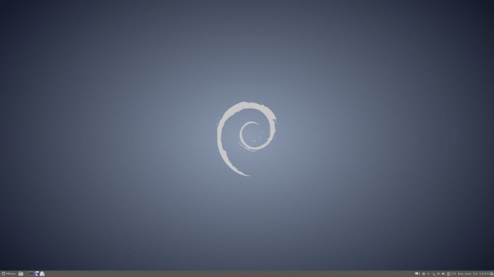

Debian — операционная система, состоящая из свободного ПО с открытым исходным кодом. В настоящее время Debian GNU/Linux — один из самых популярных и важных дистрибутивов GNU/Linux, в первичной форме оказавший значительное влияние на развитие этого типа ОС в целом. Также существуют проекты на основе других ядер: Debian GNU/Hurd, Debian GNU/kFreeBSD и Debian GNU/kNetBSD. Debian может использоваться в качестве операционной системы как для серверов, так и для рабочих станций. Debian имеет наибольшее среди всех дистрибутивов хранилище пакетов — готовых к использованию программ и библиотек, — и если даже не по их числу, то по числу поддерживаемых архитектур: начиная с ARM, используемой во встраиваемых устройствах, наиболее популярных x86-64 и PowerPC, и заканчивая IBM S/390, используемой в мейнфреймах. Для работы с хранилищем разработаны разные средства, самое популярное из которых — Advanced Packaging Tool (APT).
Текущая стабильная версия официально портирована на следующие архитектуры:
i386 — архитектура x86, разработана для Intel-совместимых 32-битных процессоров
amd64 — архитектура x86-64 разработана для Intel/AMD 64-битных процессоров
armel — архитектура ARM для Risc PC и различных встраиваемых систем
armhf — архитектура ARM седьмой версии
powerpc — архитектура PowerPC
ia64 — архитектура Intel Itanium (IA-64)
mipsel — архитектура MIPS с порядком байтов от младшего к старшему
mips — архитектура MIPS с порядком байтов от старшего к младшему
s390x — архитектура IBM System z
arm64 — архитектура ARM, 64-бита (AArch64)
ppc64el — архитектура Motorola/IBM PowerPC
